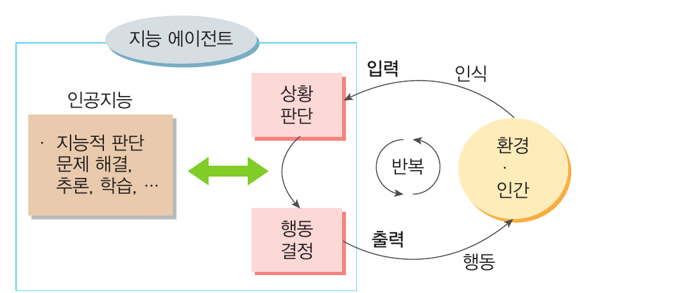

01
p.14~15
지능의 이해
지능은 새로운 상황을 이해하고 합리적인 판단과 해결 방법을 이끌어 내는 지적 능력이다.
컴퓨터의 지능
튜링의 생각
디지털 컴퓨터가 인간의 지능을 흉내 낼 수 있다고 보고, 컴퓨터의 지능을 판단할 방법을 제안했다.
튜링 테스트
질문자가 사람과 컴퓨터의 응답을 구별하기 어렵다면 컴퓨터를 ‘지능적이다’라고 판단한다.
02
p.16
인공지능의 개념과 특성
인공지능은 인간의 지능적인 판단과 행위를 컴퓨터로 흉내 내어 구현한 것이다.
문제 해결
여러 상황을 고려해 가장 좋은 선택을 한다.
추론
주어진 사실에서 새로운 사실과 지식을 이끌어 낸다.
학습
예시 데이터에서 일반화된 모델을 만든다.
예측
학습한 패턴으로 앞으로의 결과를 예상한다.
인식
이미지, 소리, 언어를 인식하고 이해한다.
생성
조건에 맞는 이미지, 언어, 소리 등을 만들어 낸다.
03
p.18~19
인공지능의 문제 해결 사례
분야별 활용 사례와 그 사례에 사용된 인공지능의 세부 지능을 함께 살펴보자.
의학 분야
엑스레이(X-ray)나 자기 공명 영상(MRI) 등의 의료용 이미지를 분석하여 의료 진단
분류·예측환자에게 적합한 암 치료 방법 제안
맞춤형 추천질병과 관련된 유전자 발견
탐색·발견
교통 분야
실시간 교통 데이터를 분석하여 교통 상황 파악
학습교통난을 해소하고 교통 흐름을 원활하게 할 방안 제시
문제 해결
금융 분야
부적절한 사용자의 거래 패턴 파악
분류고객의 조건과 자료를 바탕으로 대출 심사
맞춤형 평가고객에게 알맞은 금융 상품 제안
맞춤형 추천
문화·예술·스포츠
새로운 음악을 작곡하거나 미술 작품 제작
생성빅데이터로 선수의 몸 상태와 상대 팀의 전력 분석
예측
04
p.22
지능 에이전트의 기본 구조
환경을 인식하고 판단해 행동하며, 결과를 다시 받아들이는 과정을 반복한다.

05
p.23
인공지능 시스템의 특성
인공지능 시스템은 지능적 기능을 갖고 자율적으로 행동하지만 실수할 가능성도 있다.
지능적 기능
기존 시스템에 판단·학습·추천 같은 인공지능 기능을 더한다.
자율적 행동
목적을 효율적으로 달성하도록 스스로 판단하고 행동한다.
실수 가능성
학습 데이터와 모델의 한계로 오류가 발생할 수 있다.
일반 소프트웨어
- 처리하는 일
- 자료 저장, 반복 계산, 고정된 반복과 선택
- 주요 분야
- 대량 데이터 처리, 수식 계산
VS
인공지능 소프트웨어
- 처리하는 일
- 판단과 결정, 추론과 학습, 계획과 예측
- 주요 분야
- 질병 진단, 맞춤형 추천, 문자·음성 인식